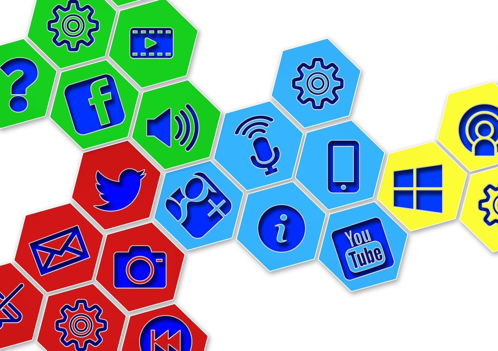

Graduação em Produção Multimídia
Objetivo
Atuar na carreira de design e comunicação, oferecer serviços ou criar seu próprio negócio com atuação para atender as necessidades da sociedade informatizada. Pode atuar no mercado da economia criativa, viabilizando e oferecendo consultorias para projetos no universo digital, assessorias para profissionais liberais e empresas de comunicação, agências de publicidade, produtoras de vídeo, editoras, estúdios de fotografia, estúdio de design, e departamentos de comunicação digital.
Sobre o Curso
O Curso Superior Tecnológico em Produção Multimídia visa formar profissionais para atuar no contexto da convergência das mídias. Oferecendo ensino de qualidade e uma formação abrangente, as disciplinas são transversais, considerando as demandas atuais desse crescente mercado. O aluno cursará disciplinas de fundamentação teórica e ferramental para a efetiva aplicação do conhecimento nos campos do Design Multimídia, Artes Criativas e da Comunicação. Para complementar a prática, o aluno terá à disposição laboratórios equipados, atelier de experimentação e estúdio de fotografia e vídeo.
O profissional poderá atuar no campo da economia criativa e da comunicação, com habilidades para direção de arte, design gráfico, criação de conteúdos digitais para internet, infográficos, ilustração, comunicação interativa impressa e eletrônica, design de jogos, design de usabilidade, animações 2D e 3D, interfaces gráficas para WEB ou para dispositivos mobile.